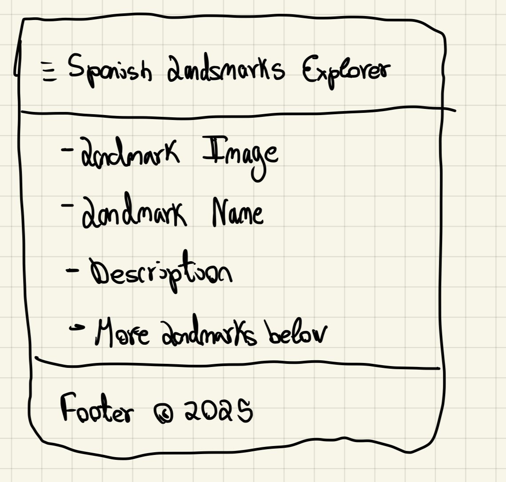
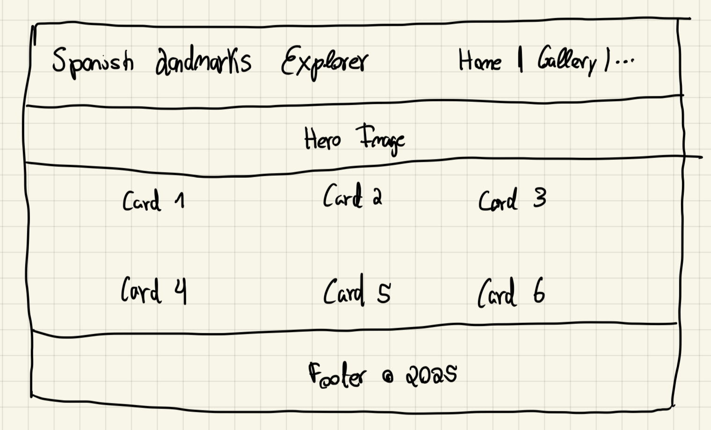

Site Name
Spanish Landmarks Explorer
This name fits the site’s purpose - exploring famous places in Spain. It’s simple, clear, and helps people know what the site is about.
Optional domain: spanishlandmarks.org
Site Purpose
This site will help visitors learn about Spain’s most famous landmarks, like the Alhambra and Sagrada Familia. It will include photos, short descriptions, and facts about each landmark. Visitors can filter by region and save their favorites. A contact page will let users send questions or feedback.
Scenarios
- What are the most famous historical landmarks in southern Spain?
- How can I save my favorite landmarks to view later?
Color Scheme
The color palette will reflect Spain’s warm and rich atmosphere:
- Primary Color: #c8102e – used for headings, buttons, and accents (represents Spain’s red flag color).
- Secondary Color: #ffc400 – used for highlights and hover effects (represents the yellow of Spain’s flag).
- Background Color: #f9f9f9 – light neutral background for readability.
Typography
- Font Family: Poppins (Sans-serif)
- Headings: Poppins, weight 600
- Body Text: Poppins, weight 400
This font is modern, clean, and easy to read on any screen size.
Wireframe
Mobile View:
Desktop View:
(Each wireframe shows header navigation, a landmark gallery, and footer.)